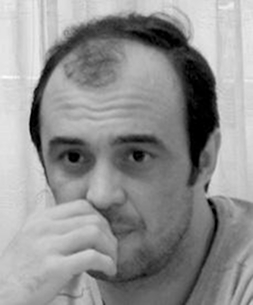

ЮЖНЫЙ КАВКАЗ - СВОИ СРЕДИ ЧУЖИХ, ЧУЖИЕ СРЕДИ СВОИХ
Миротворчество
заканчивается там,
где начинается бизнес.
Нет, я не против бизнеса.
Я просто не понимаю бизнеса
на миротворчестве.
Это нечто похожее
на бизнес на войне.
Только в одном случае
продают оружие и смерть,
в другом – декларации
избавиться от оружия и смерти. Итог такой торговли – прибыль
в свободно конвертируемой валюте и жизни тех, на крови
и свободе кого и делается бизнес.
И какая разница, торговцы облачены в камуфлированные формы или костюмы с бабочками? Какая разница – продают «калашниковы» и противопехотные мины или «миротворчество» и нереальные обещания? Пожалуй, первые поступают честнее...
Получается, что честнее и простодушнее всех поступили президент Грузии Михаил Саакашвили и российский тандем Путин-Медведев. Первый ответил наступлением на Цхинвали обстрелам грузинских сел. Получил за это звание агрессора и бомбы на свою и наши головы. Кремль получил уникальную возможность признать и так фактически признанные им же режимы в Сухуми и Цхинвали. Получил возможность отыграться за прошлые обиды. Получил статус «освободителя» обиженных и возможность настучать по голове непокорным.
«Народ, готовый отказаться, пусть временно, от свободы ради безопасности, не достоин ни свободы, ни безопасности». Эти слова принадлежат одному из авторов американской Конституции, третьему президенту США Томасу Джефферсону. В последний раз это выражение я слышал от моего абхазского друга.
На Южном Кавказе сложилась уникальная ситуация. В погоне за свободой мы забыли о безопасности своих же граждан, решая проблемы безопасности – потеряли свободу... Значит, мы не достойны ни того, ни другого?
Пару-другую лет тому назад Международная кризисная группа опубликовала отчет по ситуации в конфликтных зонах, основной мессидж которого заключался во фразе – «давайте спешить медленно»... То есть, фактическая расшифровка такова – зачем решать конфликты быстро, если можно на них еще «поживиться». Можно решать их за счет времени вашей жизни и на гранты отзывчивых международных фондов и организаций. Давайте пока решим проблему одной буквы – И. Просьба не путать с известным выражением – «расставить все точки над i». Проблема действительно сводилась к одной и только к одной букве – И.
Сухум – Сухуми, Цхинвал – Цхинвали... Плюс или минус? Вперед или назад? А международные фонды уже решили эту проблему – пишут через дробь, - Сухум/Сухуми, Цхинвал/Цхинвали и работают и там и тут... Вернее, работали... Даже комплиментарность уважаемых международных организаций и стремление к часто показушному желанию угодить и тем и этим не спасла их от выдворения из тех регионов, где не нужны лишние глаза и уши.
В очередной раз, как любит повторять один мой армянский друг – «операция прошла успешно, но врачи констатировали смерть пациента»...
Сейчас очень сложно понять, а реально ли искались пути выздоровления общества, искренни ли были попытки решить конфликтные вопросы полюбовно. Наверное, конфликты стали уже привычными, бизнес на миротворчестве стабильным, население впало в апатию.
Как говорит другой мой друг, на этот раз из Азербайджана, вспоминая восточную пословицу, «не бывает плохих времен, бывают плохие султаны». У нас же ситуация обстоит намного хуже. И времена плохие, и султаны сволочи, и в окружение мы попали очень негативное. В общем, все вокруг виноваты, кроме нас. Южнокавказский меловой круг замкнулся...
В замкнутом пространстве геополитической кухни свои среди чужих и чужие среди своих продолжают вариться в одном котле непонимания, зачастую приправленном ненавистью и сдобренном удобными мифами.
Южный Кавказ представляет собой территорию, оспариваемую со всех сторон. Есть территория постоянного кипения, но нет пространства для диалога. Есть критическая масса, но за которой не видно гражданского общества. Есть видимость активности, но не видно действия. На Южном Кавказе любят рапортовать о достигнутых результатах. Но при ближайшем рассмотрении результат – всего лишь мазок свежей краски на фасаде аварийного здания.
Российско-грузинская война 2008 года стала крахом надежды на выздоровление тяжело больного Южного Кавказа. Но операция не прошла достаточно успешно – пациент пока не умер. Значит, впереди нас ждут еще новые операции?
Ираклий Чихладзе
23-05-10
И какая разница, торговцы облачены в камуфлированные формы или костюмы с бабочками? Какая разница – продают «калашниковы» и противопехотные мины или «миротворчество» и нереальные обещания? Пожалуй, первые поступают честнее...
Получается, что честнее и простодушнее всех поступили президент Грузии Михаил Саакашвили и российский тандем Путин-Медведев. Первый ответил наступлением на Цхинвали обстрелам грузинских сел. Получил за это звание агрессора и бомбы на свою и наши головы. Кремль получил уникальную возможность признать и так фактически признанные им же режимы в Сухуми и Цхинвали. Получил возможность отыграться за прошлые обиды. Получил статус «освободителя» обиженных и возможность настучать по голове непокорным.
«Народ, готовый отказаться, пусть временно, от свободы ради безопасности, не достоин ни свободы, ни безопасности». Эти слова принадлежат одному из авторов американской Конституции, третьему президенту США Томасу Джефферсону. В последний раз это выражение я слышал от моего абхазского друга.
На Южном Кавказе сложилась уникальная ситуация. В погоне за свободой мы забыли о безопасности своих же граждан, решая проблемы безопасности – потеряли свободу... Значит, мы не достойны ни того, ни другого?
Пару-другую лет тому назад Международная кризисная группа опубликовала отчет по ситуации в конфликтных зонах, основной мессидж которого заключался во фразе – «давайте спешить медленно»... То есть, фактическая расшифровка такова – зачем решать конфликты быстро, если можно на них еще «поживиться». Можно решать их за счет времени вашей жизни и на гранты отзывчивых международных фондов и организаций. Давайте пока решим проблему одной буквы – И. Просьба не путать с известным выражением – «расставить все точки над i». Проблема действительно сводилась к одной и только к одной букве – И.
Сухум – Сухуми, Цхинвал – Цхинвали... Плюс или минус? Вперед или назад? А международные фонды уже решили эту проблему – пишут через дробь, - Сухум/Сухуми, Цхинвал/Цхинвали и работают и там и тут... Вернее, работали... Даже комплиментарность уважаемых международных организаций и стремление к часто показушному желанию угодить и тем и этим не спасла их от выдворения из тех регионов, где не нужны лишние глаза и уши.
В очередной раз, как любит повторять один мой армянский друг – «операция прошла успешно, но врачи констатировали смерть пациента»...
Сейчас очень сложно понять, а реально ли искались пути выздоровления общества, искренни ли были попытки решить конфликтные вопросы полюбовно. Наверное, конфликты стали уже привычными, бизнес на миротворчестве стабильным, население впало в апатию.
Как говорит другой мой друг, на этот раз из Азербайджана, вспоминая восточную пословицу, «не бывает плохих времен, бывают плохие султаны». У нас же ситуация обстоит намного хуже. И времена плохие, и султаны сволочи, и в окружение мы попали очень негативное. В общем, все вокруг виноваты, кроме нас. Южнокавказский меловой круг замкнулся...
В замкнутом пространстве геополитической кухни свои среди чужих и чужие среди своих продолжают вариться в одном котле непонимания, зачастую приправленном ненавистью и сдобренном удобными мифами.
Южный Кавказ представляет собой территорию, оспариваемую со всех сторон. Есть территория постоянного кипения, но нет пространства для диалога. Есть критическая масса, но за которой не видно гражданского общества. Есть видимость активности, но не видно действия. На Южном Кавказе любят рапортовать о достигнутых результатах. Но при ближайшем рассмотрении результат – всего лишь мазок свежей краски на фасаде аварийного здания.
Российско-грузинская война 2008 года стала крахом надежды на выздоровление тяжело больного Южного Кавказа. Но операция не прошла достаточно успешно – пациент пока не умер. Значит, впереди нас ждут еще новые операции?
Ираклий Чихладзе
23-05-10